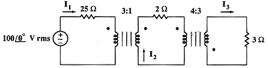

A09 AC analysis: Ideal Transformer problem
Question. Given the following circuit, find the rms currents through all resistors.

Solution:
Label nodes and elements. Define variable cir containing circuit description. I used this description:
"ex,1,0,100.*sqrt(2),0; r25,1,2,25,0; r2,3,4,2,0; r3,5,0,3,0; t1,2,3,3,1; t2,4,5,4,-3" àcir
Simulate this circuit using alternating current analysis. Remember that transformers only are understood by ac(). Since no frequency have been specified, we just place a letter as frequency. I placed w.
sq
\ac(cir,w)Now ask for the currents. Remember that you've been asked to provide rms currens, defined as rmscurrent=current/(sqrt(2)). Ask them by typing:
ir25/sqrt(2)
1.0989
ir2
/sqrt(2) 3.29671ir3/sqrt(2)
-4.39559
Answer: The answers obtained are the right ones.